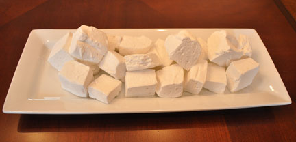

Special treats for Valentine's Day
Remember that we have lots of small items (in addition to complete party fare) that out catering staff can provide. One of our most popular item this seasons has been our delicious home-made marshmallow. These confectionary delights are made with out own homemade vanilla and are dusted with powdered sugar. They make wonderful gourmet s'mores, but are at their best floating on top of a rich hot cocoa.
